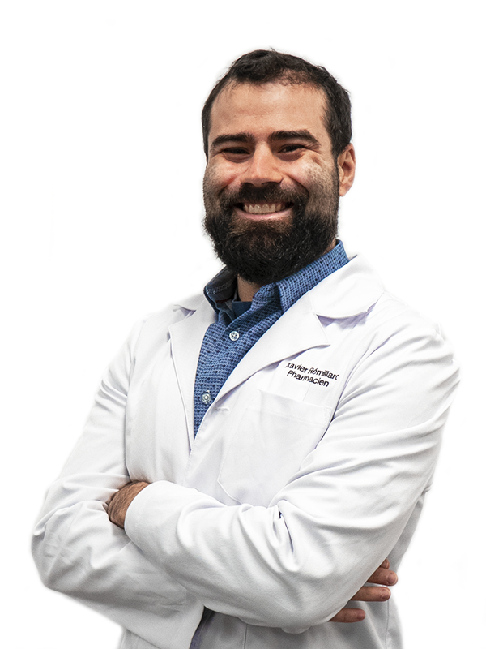

NOTRE ÉQUIPE
TEMPS PLEIN
Notre équipe expérimentée est formée principalement de vingt pharmacien(ne)s à temps plein, dont:
Suite à son doctorat professionnel en Pharmacie, Nicolas oeuvre maintenant comme pharmacien remplaçant depuis 2013. Son mérite académique et son amour pour la profession lui a valu d'être inscrit au tableau d'honneur du doyen. Depuis, il a fondé son agence de remplacement afin de pouvoir partager cette passion aux quatre coins du Québec. Ses autres passions inclus le hockey et il pourrait surement vous défier sur un parcours de golf cet été si vous n'avez pas besoin de lui comme pharmacien remplaçant.
Après avoir complété un B.Sc. en Pharmacologie, une M.Sc. en Biochimie et un certificat en gérontologie et avoir publié plusieurs articles scientifiques, Anton a entrepris des études en Pharmacie en 2009. Après une brève carrière comme pharmacien salarié en 2013, il oeuvre depuis comme pharmacien remplaçant à temps plein. De plus, il a aussi travaillé avec ASCCA et Pharmaciens sans frontières lors de missions humanitaires en Tanzanie et en Haïti. Bien qu'il travaille beaucoup, il se réserve toujours un peu de temps pour voyager afin d'atteindre son objectif de manger dans tous les pays du monde.

Ce bourreau de travail a terminé son doctorat en Pharmacie en 2013 qui l'a mené à une brève carrière de pharmacien salarié pendant un peu moins d'un an. Il sillonne depuis les routes du Québec comme pharmacien remplaçant à temps plein en ayant comme objectif de travailler dans toutes les différentes régions du Québec. Il a aussi collaboré avec Pharmaciens sans frontières lors de missions humanitaires en Ouganda et en Haïti. Son penchant pour les destinations exotiques l'a aussi amené sur les routes et les rails de l'Inde, du Sri Lanka et du Myanmar.
Suite à sa graduation en 2013, Alexandre a d'abord débuté sa carrière comme pharmacien salarié pendant deux ans. Par la suite, il a joint notre équipe à titre de pharmacien remplaçant à temps plein et sillonne depuis les routes du Québec. Que ce soit par son calme et son professionnalisme dans un laboratoire de pharmacie ou par son smash et sa rapidité sur un court de tennis ou de badminton, Alexandre ne cesse d'impressionner tous les gens qu'il rencontre.
Après avoir obtenu son doctorat en Pharmacie en 2015 à l'Université Laval, Julien est revenu à Montréal pour travailler comme pharmacien communautaire et pour bâtir son empire immobilier. Il a ensuite entrepris une carrière de pharmacien remplaçant à temps plein où sa passion pour la pratique lui permet tous les jours de s'adapter dans tous les milieux et à toutes les équipes. Il espère un jour voir son sarrau retiré à titre de pharmacien ayant visité le plus grand nombre de pharmacie du Québec. À nos yeux, il est déjà une légende.
Diplômée en 2012, Justine a travaillé pendant 5 ans pour une pharmacie spécialisée en magistrales stériles, mais c'est la pratique hospitalière et son nouveau petit chien qui ont réussi à charmer son coeur récemment. Sinon, elle adore voyager et se déhancher lors de ses cours de zumba. Mais ses plus grandes qualités sont son humour et sa bonne humeur qui permettent d'égayer toutes les journées de travail.
Gradué en 2018, Jimmy est un passionné de BBQ et de voyage qui est tombé amoureux du surf à Hawaii ! Après avoir fait un mini tour de l'Asie (Japon et Vietnam), il aimerait partir à la conquête de l'Europe un jour ! Par contre, sa plus grande force est qu'il est capable de travailler 12 heures sans manger et rester debout avec seulement sa volonté de feu !
Travaillant en pharmacie communautaire depuis sa graduation en 2012, Stéphanie ne cesse d’enjoliver tous les milieux qui ont la chance de l’accueillir. Aventurière dans l’âme, elle s’est offerte une préretraite d’un an afin d’explorer le globe en 2016. Revenue en territoire québécois, elle sillonne maintenant les routes de la province avec son van en compagnie de son adorable chien Léo à la recherche de sa prochaine aventure en plein-air !
TEMPS PARTIEL
Environ 150 pharmacien(ne)s et étudiant(e)s en pharmacie et plus de 50 ATP à temps partiel font aussi partie de notre équipe, dont: